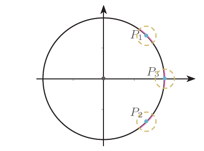
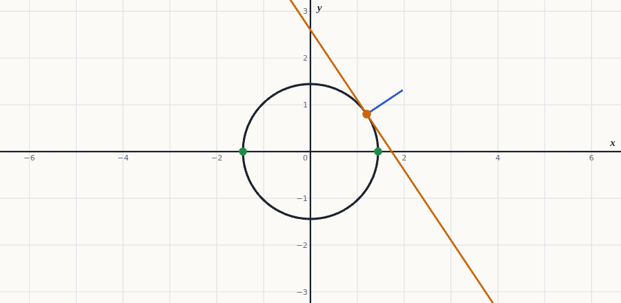

Módulo V · Aplicaciones de la diferencial · Tema 5.3
Teorema de la función implícita
Cuándo una ecuación $f(x,y)=0$ permite «despejar» una variable en función de las otras, aunque no sepamos despejarla, y cómo derivar esa variable sin conocer su fórmula (derivación implícita).
Libro oficial: Cálculo para Ingenieros, §5.3 (pp. 204-212)Ejercicios: E Ej. 5.23–5.27Examen: 2 problemas de X⏱ ~3 h de estudio
U oficial
E ejercicios
P propio
X exámenes
— pasa el ratón (o toca) por cada etiqueta para ver libro y página; en pantallas anchas aparecen en el margen derecho.
La idea del tema en una frase
Una ecuación como $x^2+y^2=1$ dibuja una curva. A veces, mirando un trozo de esa curva, ese trozo es la gráfica de una función $y=g(x)$ (por ejemplo, la mitad de arriba de la circunferencia). Pero hay puntos donde no: en el extremo derecho de la circunferencia, por cada $x$ habría dos valores de $y$. El teorema de la función implícita da un test que se hace solo con una derivada parcial: si $\frac{\partial f}{\partial y}\ne0$ en el punto, la curva allí es una gráfica $y=g(x)$ (la tangente no es vertical). Y, además, regala la derivada de $g$ sin necesidad de conocer $g$: $\frac{dy}{dx}=-\frac{\partial f/\partial x}{\partial f/\partial y}$.
Si solo tienes un rato, llévate esto. El resto de la página lo desarrolla con ejemplos y ejercicios.
Método en 4 pasos
Pasa todo a un lado: $f(x,y)=0$ (o $f(x,y,z)=0$) y comprueba que $f$ tiene parciales continuas (con polinomios, exponenciales y trigonométricas basta una frase).
Comprueba el punto: $f(a,b)=0$ (¿está en la curva?) y la parcial de la variable que despejas distinta de $0$: $f_y(a,b)\ne0$ si quieres $y=g(x)$; $f_x(a,b)\ne0$ si quieres $x=g(y)$.
Primera derivada: $y'=-\dfrac{f_x}{f_y}$ en el punto (o deriva la ecuación con $y=y(x)$ dentro y despeja $y'$).
Segunda derivada: deriva otra vez la ecuación ya derivada, después sustituye punto e $y'$, y despeja $y''$.
Qué hago según lo que piden
¿«¿Garantiza el teorema que se despeja $y$ cerca de $(a,b)$?» $\to$ tabla de dos «sí»: $f(a,b)=0$ y $f_y(a,b)\ne0$. Si falla, «no lo garantiza» (no «es imposible»).
¿«Pendiente, recta tangente o $y'$»? $\to$ $-f_x/f_y$ en el punto; tangente $y-b=y'(a)(x-a)$.
¿«$g''$»? $\to$ derivar dos veces la ecuación y evaluar al final.
¿«$z=g(x,y)$, $z_x$, $z_y$ o plano tangente»? $\to$ $z_x=-f_x/f_z$, $z_y=-f_y/f_z$, con $f_z\ne0$.
Fórmulas y enunciados, con su «cuándo se usa»
Fórmula o enunciado
Cuándo se usa
$f(a,b)=0$ y $f_y(a,b)\ne0\Rightarrow y=g(x)$ cerca de $a$, con $g(a)=b$
Decidir si se puede despejar $y$ (U p.206).
$g'(x)=-\dfrac{f_x(x,g(x))}{f_y(x,g(x))}$
Primera derivada o pendiente de la curva (U pp.206-207).
Derivar $f(x,g(x))=0$ dos veces y evaluar al final
$g''$ sin conocer $g$ (U pp.207-210).
$m=-\dfrac{f_x(a,b)}{f_y(a,b)}$ y $\nabla f\perp$ curva de nivel
Tangente a una curva de nivel (U p.210).
$\dfrac{\partial z}{\partial x_j}=-\dfrac{f_{x_j}}{f_z}$ si $f_z\ne0$
Superficies $z=g(x,y)$ definidas implícitamente (U p.211).
Qué cae
En los exámenes resueltos hay 2 problemas de este tema: un verdadero o falso sobre las hipótesis del teorema (1 punto) y un ejercicio largo de $g'$ y $g''$ (3 puntos). En el libro de ejercicios son E 5.23-5.27. Tabla por tipo: pestaña Examen.
U pp.204-212P
Camino de estudio: elige tu nivel
Empieza por «Mínimo»; luego «Completo» y, para nota alta, «Reto». Marca cada ejercicio al terminarlo.
Los apartados del teorema (2), la derivación implícita (3) y el mapa de decisión (apartado 6).
Un ejercicio de cada tipo:
E 5.23 (¿se garantiza el despeje?), E 5.25 (qué variable se despeja), E 5.26 (pendiente de una curva de nivel), E 5.27 (tres variables), E 5.24 (segunda derivada), Examen 1 (verdadero o falso) y Examen 2 ($g'$ y $g''$).
Todo el tema (desmarca «Solo lo esencial»), con el interactivo.
E 5.23-5.27, los 2 exámenes, los ejemplos propios y todas las prácticas.
🟣 Reto · ≈ +1 h
P4 (folium: puntos sin despeje y $y''$), las prácticas ★★ y la segunda derivada de E 5.24 sin mirar.
Verás solo lo esencial; desmarca para ver todo.
0Antes de empezar U p.204
Lo que vas a aprender. qué debes saber antes de empezar y qué se pide en los ejercicios y en el examen.
Qué necesitas saber ya
Derivadas parciales y gradiente (tema 4.3), y que el gradiente es perpendicular a las curvas de nivel.
Regla de la cadena con una variable final (tema 5.2): $\frac{d}{dx}f(x,y(x))=\frac{\partial f}{\partial x}+\frac{\partial f}{\partial y}\,y'(x)$. Es literalmente la herramienta de este tema.
Plano tangente (tema 5.1): $z\approx z_0+z_x(x-x_0)+z_y(y-y_0)$.
Derivación de una variable: regla del producto y de la cadena (tema 2.2), necesarias para derivar dos veces.
Mapa del tema: qué se pide en los ejercicios y en el examen
(A) «¿Garantiza el teorema que la ecuación define $y$ como función de $x$ cerca de un punto?»: comprobar $f(a,b)=0$ y la parcial adecuada $\ne0$ (E 5.23, 5.25; X p.150, verdadero/falso de 1 punto). (B) Derivar implícitamente, a veces dos veces ($g'(1)$ y $g''(1)$; E 5.24; X p.30, 3 puntos). (C) Pendiente de una curva de nivel (E 5.26). (D) Superficie $z=g(x,y)$ y sus derivadas parciales (E 5.27). U recomienda «realizar numerosos ejercicios para interiorizar con mayor facilidad el contenido de este apartado».
1Ecuación implícita y ecuación explícita U pp.204-205
Lo que vas a aprender. a distinguir una ecuación implícita de una explícita y a pasar de una a otra.
Cómo lo reconoces: «Despeja $y$ de $F(x,y)=0$», «la ecuación define $y$ como función de $x$».
Qué haces: Pasas todo a un lado ($f=0$) y te preguntas si, cerca del punto, la curva es la gráfica de una función.
Ejemplo mínimo: De $y-x^2=0$ sale $y=x^2$; de $x^2+y^2=1$, cerca de $(0,1)$, sale $y=\sqrt{1-x^2}$.
Idea intuitiva · «despejar» y no poder despejar
Despejar es escribir una variable como función de la otra: de $y-x^2=0$ sale $y=x^2$. Pero de $y^5+y+x=0$ no sabemos despejar $y$ con operaciones elementales, aunque para cada $x$ hay un único $y$. El teorema dirá cuándo es posible aunque no sepamos hacerlo, y nos dejará derivar igualmente.
U pp.204-205
Ecuación implícita y explícita
Una expresión es una ecuación implícita cuando toma la forma $f(x_1,\dots,x_n)=0$: normalmente no muestra cómo despejar una variable en función de las otras, ni siquiera sabemos a priori si es posible. Una ecuación explícita es aquella en la que una de las variables está expresada en función de las otras: si llamamos $y=x_n$ a esa variable, la ecuación es $y=y(x_1,\dots,x_{n-1})$. Pasar de explícita a implícita es muy sencillo: basta escribir $f(x_1,\dots,x_{n-1},y)=y-y(x_1,\dots,x_{n-1})=0$. La pregunta es el camino inverso: ¿cuándo, y en qué conjunto, se puede pasar de implícita a explícita?
U p.205
Ejemplo 5.10 de U · la parábola $y=x^2$ en forma implícita
Se pasa todo a un lado: $f(x,y)=x^2-y=0$. Es útil porque el teorema siempre trabaja con «$f=0$».
U p.205
Ejemplo guía: la circunferencia
La circunferencia de radio 1 es $x^2+y^2=1$, o sea, $f(x,y)=x^2+y^2-1=0$. Tres puntos de ella:
$P_1=\left(\frac{\sqrt2}2,\frac{\sqrt2}2\right)$: cerca de $P_1$ se despeja $y=\sqrt{1-x^2}$.
$P_2=\left(\frac{\sqrt2}2,-\frac{\sqrt2}2\right)$: cerca de $P_2$, $y=-\sqrt{1-x^2}$.
$P_3=(1,0)$: cerca de $P_3$ no se puede escribir $y$ en función de $x$ (la tangente es vertical y por cada $x$ habría dos valores de $y$), pero sí al revés: $x=\sqrt{1-y^2}$.

Circunferencia $x^2+y^2=1$ con $P_1$, $P_2$ y $P_3$; los círculos punteados son los entornos donde se mira la curva. U p.205
2El teorema de la función implícita (dos variables) U pp.206-207
Lo que vas a aprender. a decidir con el teorema de la función implícita si se puede despejar una variable cerca de un punto.
Cómo lo reconoces: «¿Garantiza el teorema que define $y$ como función de $x$ cerca de $(a,b)$?».
Qué haces: Compruebas $f(a,b)=0$ y que la parcial de la variable que despejas no se anula; si falla una, «no lo garantiza».
Ejemplo mínimo: En $x^2+y^2=9$, el punto $(3,0)$ tiene $f_y=0$: no se garantiza $y=g(x)$ (sí $x=g(y)$).
Teorema de la función implícita (dos variables)
Sea $f:D\subset\mathbb R^2\to\mathbb R$ una función continua con derivadas parciales continuas en un abierto $D$. Sea $(a,b)$ un punto de $D$ con
$$\text{(1)}\ \ f(a,b)=0\qquad\text{y}\qquad\text{(2)}\ \ \frac{\partial f}{\partial y}(a,b)\ne0.$$
Entonces existen un intervalo abierto $U$ al que pertenece $a$, un intervalo abierto $V$ al que pertenece $b$ y una única función $g:U\to V$ tal que $f(x,g(x))=0$ para $x\in U$. Además, $b=g(a)$, $g$ es continua y con derivada continua, y
$$\frac{dg}{dx}=\frac{dy}{dx}=-\frac{\partial f/\partial x}{\partial f/\partial y}\qquad\text{para todo }x\in U,\ y\in V,$$
con las parciales evaluadas en $(x,g(x))$.
Cambio de papeles: el resultado vale intercambiando las dos variables: si $\frac{\partial f}{\partial x}(a,b)\ne0$, se puede expresar $x$ en función de $y$ (y entonces $\frac{dx}{dy}=-\frac{\partial f/\partial y}{\partial f/\partial x}$).
U p.206
Cómo leer el teorema
Condición (1): el punto está en la curva. Sin ella, ni se plantea la pregunta.
Condición (2): la parcial respecto de la variable que quieres despejar no se anula. Si quieres $y$, miras $\frac{\partial f}{\partial y}$; si quieres $x$, miras $\frac{\partial f}{\partial x}$. Geométricamente, la tangente a la curva en $(a,b)$ no es vertical (si despejas $y$) o no es horizontal (si despejas $x$).
Conclusión local: solo habla de un entorno de $a$: «cerca de». No dice cuán grande es $U$.
Es condición suficiente: si (2) falla, el teorema no garantiza nada; no afirma que sea imposible (a veces lo es, a veces no).
P
Ejemplo 5.11 de U · la circunferencia $x^2+y^2-1=0$
$f(x,y)=x^2+y^2-1$ es un polinomio: continua con parciales continuas en $\mathbb R^2$. $\frac{\partial f}{\partial x}=2x$, $\frac{\partial f}{\partial y}=2y$.
Despejar $y$ exige $2y\ne0$, es decir, $y\ne0$. Se puede en $P_1$ y en $P_2$ (ambos con $y=\pm\frac{\sqrt2}2\ne0$); no se puede garantizar en $P_3=(1,0)$ ($y=0$).
Despejar $x$ exige $2x\ne0$. En $(1,0)$: $\frac{\partial f}{\partial x}(1,0)=2\ne0$, así que cerca de $(1,0)$ sí se despeja $x=\sqrt{1-y^2}$.
Cuándo se puede despejar $x$: en todos los puntos de la circunferencia salvo $(0,1)$ y $(0,-1)$.
U pp.206-207
3Derivación implícita U pp.207-210
Lo que vas a aprender. a calcular $y'$ e $y''$ sin conocer la función, derivando la ecuación.
Cómo lo reconoces: «Calcula $g'(1)$ y $g''(1)$», «derivada de la función implícita», «recta tangente en el punto».
Qué haces: Derivas la ecuación con $y=y(x)$ dentro (cadena), despejas $y'$ y, para $y''$, derivas otra vez antes de evaluar.
Ejemplo mínimo: De $y^3+x=0$: $3y^2y'+1=0$, luego $y'=-\frac1{3y^2}$.
Idea intuitiva · derivar una función que no conoces
Supón que cerca de $(a,b)$ la ecuación $f(x,y)=0$ define $y=y(x)$. Entonces $f(x,y(x))$ vale $0$ para todo $x$ del entorno: es una función constante, y su derivada es $0$. Pero esa derivada la sabes calcular con la regla de la cadena del tema 5.2. Igualas a $0$, despejas $y'$, y ya está: no ha hecho falta conocer $y(x)$.
U p.207
Derivación implícita
Si $f(x,y)=0$ define $y=y(x)$ en un entorno de $(a,b)$, se escribe $f(x,y(x))$ y se aplica la regla de la cadena:
$$\frac{d}{dx}f(x,y(x))=\frac{\partial f}{\partial x}+\frac{\partial f}{\partial y}\,\frac{dy}{dx}=0\ \Longrightarrow\ \frac{dy}{dx}=-\frac{\partial f/\partial x}{\partial f/\partial y}.$$
Este proceso se llama derivación implícita. Si se dan las condiciones adecuadas, se puede derivar implícitamente sucesivas veces.
U p.207
Ejemplo 5.12 de U · el folium de Descartes $x^3+y^3-3xy=0$
Los ceros de $f(x,y)=x^3+y^3-3xy$ definen el folium de Descartes (hoja de Descartes), curva propuesta en 1638 por Descartes con la ecuación $x^3+y^3=3axy$ para un número real $a$ (aquí $a=1$).
Dónde se despeja $y$: donde $\frac{\partial f}{\partial y}\ne0$, es decir, $x\ne y^2$. Para ver qué puntos de la curva incumplen eso, se sustituye $x=y^2$ en $x^3+y^3-3xy=0$: $y^6+y^3-3y^3=y^3(y^3-2)=0$, luego $y=0$ o $y=\sqrt[3]2$. Así, $y$ se escribe en función de $x$ si $(x,y)\notin\{(0,0),(\sqrt[3]4,\sqrt[3]2)\}$, que son los puntos donde la tangente es vertical.
Dónde se despeja $x$: donde $y\ne x^2$; por la simetría de la ecuación, salvo en $(0,0)$ y $(\sqrt[3]2,\sqrt[3]4)$.
Resumen: en todo punto de la curva distinto de $(0,0)$ se puede despejar una de las dos variables, porque solo en $(0,0)$ se anulan las dos parciales.
Primera derivada: se deriva la ecuación con $y=y(x)$: $3x^2+3y^2\frac{dy}{dx}-3y-3x\frac{dy}{dx}=0$. Despejando, $$\frac{dy}{dx}=-\frac{3x^2-3y}{3y^2-3x}=\frac{y-x^2}{y^2-x}.$$
Segunda derivada: se deriva otra vez la ecuación $3x^2+3y^2y'-3y-3xy'=0$ respecto de $x$, lo que da $6x+6y(y')^2+3(y^2-x)\,y''-6y'=0$; se despeja $y''=\dfrac{6y'-6x-6y(y')^2}{3(y^2-x)}$, se sustituye $y'=\frac{y-x^2}{y^2-x}$ y, tras simplificar, $$\frac{d^2y}{dx^2}=-\frac{2\left(xy+xy^4+x^4y-3x^2y^2\right)}{(y^2-x)^3}.$$
Simplificación opcional sobre la curva (útil para evaluar): como $x^3+y^3=3xy$, es $xy^4+x^4y=xy(x^3+y^3)=3x^2y^2$, así que el numerador es $2xy$ y $y''=-\dfrac{2xy}{(y^2-x)^3}$.
U pp.207-210
Error típico
Al derivar la ecuación, olvidar que $y$ depende de $x$: $\frac{d}{dx}(y^3)=3y^2y'$ (no $3y^2$), y $\frac{d}{dx}(xy)=y+x\,y'$ (producto). Para $y''$, derivar la ecuación derivada antes de sustituir el punto (si se sustituye primero se deriva una constante y sale $0=0$) y no tratar $y'$ como constante al derivar otra vez.
P
4Pendiente de una curva de nivel U p.210
Lo que vas a aprender. a obtener la pendiente de una curva de nivel con $-f_x/f_y$.
Cómo lo reconoces: «Pendiente de la curva de nivel de $F$ por $(a,b)$», «tangente a $F(x,y)=k$».
Qué haces: La curva de nivel por $(a,b)$ es $F(x,y)=F(a,b)$; su pendiente es $-F_x/F_y$ y el gradiente es perpendicular a ella.
Ejemplo mínimo: $F=x^2+y^2$ en $(1,1)$: $m=-\frac{2}{2}=-1$.
Idea intuitiva
La curva de nivel $f(x,y)=k$ es una ecuación implícita. Si no es vertical en el punto, es la gráfica de $y=y(x)$ y la pendiente de su tangente es $y'=-f_x/f_y$. (Otra forma de verlo, con el gradiente perpendicular, en E 5.26.)
U p.210
Pendiente de la recta tangente a una curva de nivel
Si $z=f(x,y)$ cumple las condiciones del teorema, sus curvas de nivel $f(x,y)=k$ definen una de las variables (digamos $y$) en función de la otra, y la pendiente de la recta tangente es
$$\frac{dy}{dx}=-\frac{\partial f/\partial x}{\partial f/\partial y}\,:$$
menos el cociente de la primera entre la segunda componente del gradiente en ese punto.
U p.210
Ejemplo 5.13 de U · $f(x,y)=x^2+3xy-y^2$ en $(1,0)$
Qué curva: $f(1,0)=1$, así que $k=1$ y la curva es $F(x,y)=x^2+3xy-y^2-1=0$.
Parciales: $\frac{\partial F}{\partial x}=2x+3y$ (vale $2$ en $(1,0)$), $\frac{\partial F}{\partial y}=3x-2y$ (vale $3\ne0$ en $(1,0)$). Hay $y=y(x)$ cerca de $x=1$, con $y(1)=0$.
Pendiente: $y'(x)=-\dfrac{2x+3y}{3x-2y}$; en $(1,0)$, $y'(1)=-\dfrac23$.
U p.210

Interactivo propio. Elige $F$ y mueve el punto $(a,b)$: la curva negra es la de nivel $F(x,y)=F(a,b)$, la recta naranja es su tangente (pendiente $-F_x/F_y$) y el segmento azul es el gradiente, siempre perpendicular a la tangente. Los puntos verdes son los de la curva con $F_y=0$: ahí la tangente es vertical y el teorema de la función implícita no permite despejar $y=y(x)$. Con la del Ejemplo 5.13 en $(1,0)$ sale $y'=-\frac23$. Usa la rueda para acercar. P
5El teorema en varias variables U pp.211-212
Lo que vas a aprender. a usar el teorema con tres o más variables: superficies $z=g(x,y)$.
Cómo lo reconoces: «$f(x,y,z)=0$ define $z=g(x,y)$; calcula $g_x$, $g_y$ o el plano tangente».
Qué haces: Compruebas $f_z\ne0$ y despejas cada parcial: $z_x=-f_x/f_z$, $z_y=-f_y/f_z$.
Ejemplo mínimo: $x+y+z^3=3$ en $(1,1,1)$: $z_x=-\frac13$.
Idea intuitiva · una superficie como gráfica
Con tres variables, $f(x,y,z)=0$ es una superficie (como la esfera $x^2+y^2+z^2=1$). Cerca de un punto, esa superficie es la gráfica de una función $z=g(x,y)$ si el plano tangente no es «vertical», y eso lo mide $\frac{\partial f}{\partial z}\ne0$. Es lo mismo que antes, con una variable más a la derecha.
P
Teorema de la función implícita (varias variables)
Sea $f(x_1,\dots,x_n,z)$ una función continua, definida en un abierto $D\subset\mathbb R^{n+1}$ y con valores en $\mathbb R$, con derivadas parciales continuas en $D$. Sea $(a_1,\dots,a_n,b)\in D$ con $f(a_1,\dots,a_n,b)=0$ y $\frac{\partial f}{\partial z}(a_1,\dots,a_n,b)\ne0$. Entonces existen una bola abierta $U$ de $(a_1,\dots,a_n)$, un intervalo abierto $V$ de $b$ y una única función $g:U\to V$ con derivadas parciales continuas tal que $f(x_1,\dots,x_n,g(x_1,\dots,x_n))=0$ para todo $(x_1,\dots,x_n)\in U$. Además, $z=g(x_1,\dots,x_n)$ y
$$\frac{\partial g}{\partial x_j}=\frac{\partial z}{\partial x_j}=-\frac{\partial f/\partial x_j}{\partial f/\partial z}\qquad\text{para todo }(x_1,\dots,x_n)\in U\text{ y }z\in V.$$
Por comodidad se toma la última variable como la que se escribe en función de las otras, pero el resultado vale para cualquiera de ellas, sin más que cambiar $z$ por $x_j$. (El resultado se generaliza a funciones $f:\mathbb R^{n+m}\to\mathbb R^m$.)
U p.211
Ejemplo 5.14 de U · $x^2-xy+3z^2=3$ cerca de $(0,1,1)$
Pasar a $f=0$: $f(x,y,z)=x^2-xy+3z^2-3$; $f(0,1,1)=0-0+3-3=0$ ✓.
Parciales: $\frac{\partial f}{\partial x}=2x-y$, $\frac{\partial f}{\partial y}=-x$, $\frac{\partial f}{\partial z}=6z$. En el punto, $\frac{\partial f}{\partial z}(0,1,1)=6\ne0$ ✓: existe $g$ en un disco centrado en $(0,1)$ con $z=g(x,y)$.
Aquí se puede despejar (para comprobar): $z=\sqrt{1-\frac{x^2-xy}3}$ (raíz positiva, porque $z=1>0$).
Derivadas parciales sin despejar: $\frac{\partial z}{\partial x}(0,1)=-\frac{\partial f/\partial x}{\partial f/\partial z}(0,1,1)=-\frac{-1}{6}=\frac16$ y $\frac{\partial z}{\partial y}(0,1)=-\frac{\partial f/\partial y}{\partial f/\partial z}(0,1,1)=-\frac06=0$.
Comprobación derivando $z=\sqrt{1-(x^2-xy)/3}$ en $(0,1)$: da $\frac16$ y $0$. ✓
U pp.211-212
6Recetas del tema P
Lo que vas a aprender. qué hacer según lo que te pidan (comprobar las hipótesis, derivar, pendiente de una curva de nivel o tres variables) con un mapa de decisión y las recetas del tema.
Léelo de arriba abajo: en cada pregunta, «no» baja a la siguiente y «sí» te lleva a la acción de la derecha. Lo que más puntos se pierde: no comprobar $f(a,b)=0$, mirar la parcial equivocada, responder «imposible» en vez de «no lo garantiza» y evaluar antes de derivar la segunda vez.
Ver la tabla con el detalle de cada caso
Piden…
Herramienta
Ojo con…
¿Define $y=g(x)$ cerca de $(a,b)$?
$f(a,b)=0$ y $f_y(a,b)\ne0$
Mirar $f_y$ y no $f_x$; si falla, «no lo garantiza»
¿Define $x=g(y)$?
$f(a,b)=0$ y $f_x(a,b)\ne0$; $g'=-f_y/f_x$
Cociente invertido respecto de $y=g(x)$
$y'$, pendiente o tangente
$-f_x/f_y$ en el punto
El signo menos; evaluar en el punto
$y''$
Derivar dos veces la ecuación; evaluar al final
No tratar $y'$ como constante
Pendiente de una curva de nivel
$-F_x/F_y$ en $(a,b)$
La constante $k$ no interviene
$z=g(x,y)$, parciales y plano
$z_x=-f_x/f_z$, $z_y=-f_y/f_z$
Comprobar $f_z\ne0$; términos de producto como $xz$
Recetas del tema
¿Garantiza el teorema que se despeja una variable cerca de $(a,b)$? (1) Pasar todo a un lado, $f=0$; (2) $f$ con parciales continuas (con polinomios, exponenciales, senos y cosenos basta una frase); (3) $f(a,b)=0$; (4) la parcial respecto de la variable que se despeja no se anula en el punto. Si falla (3), el punto no está en la curva; si falla (4), el teorema no garantiza nada (no se concluye que sea imposible).
Derivar la función implícita. Primera derivada: $y'=-f_x/f_y$ (o $z_x=-f_x/f_z$, $z_y=-f_y/f_z$) en el punto, o derivar la ecuación con $y=y(x)$ dentro y despejar $y'$ (más cómodo para $y''$). Segunda derivada: derivar otra vez la ecuación ya derivada, después sustituir punto y $y'$, y despejar $y''$. Pendiente de la curva de nivel por $(a,b)$: $m=-f_x(a,b)/f_y(a,b)$ (la constante $k$ no afecta).
7Practica P
Lo que vas a aprender. a resolver tú solo un ejemplo de cada tipo. Intenta cada uno antes de abrir la pista; empieza por los ★ (los ★★ son ampliación).
Ahora hazlo tú
Función implícita: (1) pasa todo a un lado, $f=0$, y comprueba que $f$ tiene parciales continuas; (2) comprueba que el punto está en la curva, $f(a,b)=0$; (3) la parcial de la variable que despejas debe ser $\ne0$; (4) derivada: $-\frac{\text{parcial de la otra}}{\text{parcial de la que despejas}}$, o deriva la ecuación con la variable despejada «dentro»; para $y''$, deriva antes de evaluar.
¿Garantiza el teorema despejar $y$? (las dos hipótesis)
★ Básico Práctica a1 · ¿en qué punto de $y^3-3y+x^2=2$ se despeja $y$? P
¿En cuáles de estos puntos garantiza el teorema de la función implícita que la ecuación $y^3-3y+x^2=2$ define a $y$ como función de $x$? a) $(2,1)$. b) $(0,-1)$. c) $(1,0)$. d) $(0,2)$.
Pista
Escribe $f(x,y)=y^3-3y+x^2-2$. Para cada punto, dos preguntas: ¿$f=0$? ¿$\frac{\partial f}{\partial y}\ne0$? Fíjate en que $\frac{\partial f}{\partial y}=3(y^2-1)$ se anula si $y=\pm1$.
Ver solución
Escribir $f=0$: $f(x,y)=y^3-3y+x^2-2$, un polinomio: continua con parciales continuas en $\mathbb R^2$ (abierto), como pide el teorema (U p.206).
Parcial de la variable que se despeja: $\frac{\partial f}{\partial y}=3y^2-3=3(y^2-1)$.
a) $(2,1)$: $f(2,1)=1-3+4-2=0$ ✓, pero $\frac{\partial f}{\partial y}(2,1)=0$ ✗.
b) $(0,-1)$: $f(0,-1)=-1+3+0-2=0$ ✓, pero $\frac{\partial f}{\partial y}(0,-1)=0$ ✗.
c) $(1,0)$: $f(1,0)=0-0+1-2=-1\ne0$ ✗: el punto no está en la curva; el teorema no se puede plantear.
d) $(0,2)$: $f(0,2)=8-6+0-2=0$ ✓ y $\frac{\partial f}{\partial y}(0,2)=3\cdot3=9\ne0$ ✓. Las dos se cumplen.
De regalo: cerca de $x=0$ hay $y=g(x)$ con $g(0)=2$ y $g'(0)=-\frac{f_x(0,2)}{f_y(0,2)}=-\frac{2\cdot0}{9}=0$, aunque despejar $y$ exigiría resolver una cúbica.
Resultado: solo en d) $(0,2)$ (allí $f=0$ y $f_y=9\ne0$)
★★ Medio Práctica a2 · un parámetro $a$ y un punto aislado P
Para cada número real $a$ se considera la ecuación $x^3+axy+y^3=a+2$. a) Comprueba que $(1,1)$ está en la curva para todo $a$. b) ¿Para qué valores de $a$ garantiza el teorema que define $y=g(x)$ cerca de $(1,1)$? Calcula $g'(1)$ en ese caso. c) Para $a=-3$, comprueba que $x^3-3xy+y^3+1=(x+y+1)\cdot\frac12\big[(x-y)^2+(x-1)^2+(y-1)^2\big]$ y deduce qué aspecto tiene la curva cerca de $(1,1)$.
Pista
b) $\frac{\partial f}{\partial y}(1,1)$ depende de $a$. c) Una suma de cuadrados solo vale $0$ si cada cuadrado es $0$; y el punto $(1,1)$ no está en la recta $x+y+1=0$.
Ver solución
a) $f(x,y)=x^3+axy+y^3-a-2$ (polinomio). $f(1,1)=1+a+1-a-2=0$ para todo $a$ ✓.
b) Parciales: $f_x=3x^2+ay$, $f_y=ax+3y^2$. En $(1,1)$: $f_x=3+a$, $f_y=a+3$. El teorema (U p.206) exige $a+3\ne0$, es decir, $a\ne-3$.
b) Derivada: si $a\ne-3$, $g'(1)=-\dfrac{f_x(1,1)}{f_y(1,1)}=-\dfrac{a+3}{a+3}=-1$, el mismo valor para todo $a\ne-3$ (la ecuación es simétrica en $x$ e $y$, y la tangente en un punto de la diagonal tiene que ser simétrica respecto de $y=x$).
c) Con $a=-3$: las dos parciales valen $0$ en $(1,1)$; el teorema no sirve ni para $y$ ni para $x$. Desarrollando el producto del enunciado se recupera $x^3+y^3-3xy+1$ (compruébalo multiplicando: $\frac12[\dots]=x^2+y^2+1-xy-x-y$).
c) La curva: el producto es $0$ si $x+y+1=0$ (una recta) o si $(x-y)^2+(x-1)^2+(y-1)^2=0$, que solo ocurre en $(1,1)$. Como $1+1+1\ne0$, el punto $(1,1)$ está lejos de la recta: cerca de él, la curva es solo el punto $(1,1)$. No hay ninguna función $g$ definida en un intervalo alrededor de $x=1$.
Lectura: cuando el teorema no se aplica pueden pasar cosas muy raras; aquí ni siquiera hay «trozo de curva».
Resultado: $a\ne-3$, con $g'(1)=-1$ para todo $a\ne-3$; con $a=-3$, cerca de $(1,1)$ la curva es solo el punto $(1,1)$
¿Qué variable se puede despejar? (papeles cambiados)
★ Básico Práctica b1 · $y^2-2y+x^3=x-1$ en $(1,1)$: $y$ no, $x$ sí P
Sea la ecuación $y^2-2y+x^3=x-1$. ¿Garantiza el teorema de la función implícita que define $y$ como función de $x$ cerca de $(1,1)$? ¿Y $x$ como función de $y$? En el caso afirmativo, calcula la derivada de la función en el punto.
Pista
Pasa todo a la izquierda. Para $y=g(x)$ mira $\frac{\partial f}{\partial y}(1,1)$; para $x=h(y)$ mira $\frac{\partial f}{\partial x}(1,1)$ y usa $h'=-\frac{f_y}{f_x}$.
Parciales: $f_x=3x^2-1$, $f_y=2y-2$. En $(1,1)$: $f_x=2$, $f_y=0$.
¿$y=g(x)$? $f_y(1,1)=0$: el teorema no lo garantiza (U p.206).
¿$x=h(y)$? $f_x(1,1)=2\ne0$: sí, con los papeles cambiados (U p.206). Hay $x=h(y)$ cerca de $y=1$ con $h(1)=1$.
Derivada: $h'(1)=\frac{dx}{dy}(1)=-\frac{f_y(1,1)}{f_x(1,1)}=-\frac02=0$: la tangente en $(1,1)$ es vertical (paralela al eje $y$).
Complemento (no se pide): $(y-1)^2=x-x^3$; cerca de $x=1$, $x-x^3\approx-2(x-1)$: para $x$ algo menor que $1$ hay dos valores de $y$ y para $x>1$ ninguno. Aquí de hecho no se puede escribir $y=g(x)$.
Resultado: $y=g(x)$ no lo garantiza ($f_y(1,1)=0$); $x=h(y)$ sí ($f_x(1,1)=2\ne0$), con $h'(1)=0$
★★ Medio Práctica b2 · la cúbica $y^2=x^3+x^2$: dónde falla cada despeje P
Sea la curva $y^2=x^3+x^2$. Halla: a) los puntos de la curva en los que el teorema no garantiza $y=g(x)$; b) aquellos en los que no garantiza $x=h(y)$; c) los puntos en los que no se puede despejar ninguna de las dos variables. d) En el punto $(-1,0)$, ¿qué variable se despeja y cuánto vale su derivada?
Pista
Con $f=y^2-x^3-x^2$: a) resuelve el sistema $f=0$, $f_y=0$; b) el sistema $f=0$, $f_x=0$. No olvides comprobar que cada solución está en la curva.
a) $f_y=0$: $y=0$; en la curva, $x^3+x^2=x^2(x+1)=0$, así que $x=0$ o $x=-1$. Puntos: $(0,0)$ y $(-1,0)$.
b) $f_x=0$: $x=0$ o $x=-\frac23$. Con $x=0$: $y^2=0$, punto $(0,0)$. Con $x=-\frac23$: $y^2=-\frac8{27}+\frac49=\frac4{27}$, $y=\pm\frac2{3\sqrt3}=\pm\frac{2\sqrt3}9$. Puntos: $(0,0)$ y $\left(-\frac23,\pm\frac{2\sqrt3}9\right)$.
c) Ninguna: hace falta que fallen las dos a la vez: solo en $(0,0)$ (allí la curva se cruza consigo misma, como el folium de U pp.207-209).
d) En $(-1,0)$: $f_y=0$ pero $f_x(-1,0)=-3+2=-1\ne0$: se despeja $x=h(y)$ (U p.206), con $h'(0)=-\frac{f_y(-1,0)}{f_x(-1,0)}=-\frac0{-1}=0$ (tangente vertical).
Lectura: en $\left(-\frac23,\pm\frac{2\sqrt3}9\right)$ la tangente es horizontal ($f_x=0$, $f_y=\pm\frac{4\sqrt3}9\ne0$): allí $y$ sí se despeja, con $y'=0$; es $x$ la que no.
Resultado: a) $(0,0)$ y $(-1,0)$; b) $(0,0)$ y $\left(-\frac23,\pm\frac{2\sqrt3}9\right)$; c) solo $(0,0)$; d) $x=h(y)$ con $h'(0)=0$
Primera derivada implícita y recta tangente
★ Básico Práctica c1 · tangente a $x^2y+y^3=10$ en $(1,2)$ P
Comprueba que la ecuación $x^2y+y^3=10$ define $y=y(x)$ cerca de $(1,2)$, calcula $y'(1)$ de dos formas (fórmula del teorema y derivando la ecuación) y escribe la recta tangente.
Pista
Al derivar la ecuación respecto de $x$, $y$ es una función de $x$: $x^2y$ pide la regla del producto y $y^3$ la de la cadena ($3y^2y'$).
Ver solución
Hipótesis: $f=x^2y+y^3-10$ (polinomio); $f(1,2)=2+8-10=0$ ✓; $f_y=x^2+3y^2$, $f_y(1,2)=13\ne0$ ✓ (U p.206).
★★ Medio Práctica c2 · tangente a la espiral $\ln(x^2+y^2)=\operatorname{arctg}\frac yx$ en $(1,0)$ P
La ecuación $\ln(x^2+y^2)=\operatorname{arctg}\dfrac yx$ (con $x>0$) describe un trozo de espiral. a) Comprueba que define $y=y(x)$ cerca de $(1,0)$. b) Halla $y'$ en un punto cualquiera de la curva con $x-2y\ne0$. c) Escribe la recta tangente en $(1,0)$.
Pista
Con $f=\ln(x^2+y^2)-\operatorname{arctg}\frac yx$: $\frac{\partial}{\partial x}\operatorname{arctg}\frac yx=\frac{1}{1+y^2/x^2}\cdot\left(-\frac y{x^2}\right)=-\frac{y}{x^2+y^2}$ y $\frac{\partial}{\partial y}\operatorname{arctg}\frac yx=\frac{x}{x^2+y^2}$.
Ver solución
Dominio y regularidad: en el abierto $D=\{x>0\}$, $x^2+y^2>0$ y $\frac yx$ está definido: $f$ es continua con parciales continuas (U p.192).
Parciales (cadena de una variable): $f_x=\dfrac{2x}{x^2+y^2}+\dfrac{y}{x^2+y^2}=\dfrac{2x+y}{x^2+y^2}$, $f_y=\dfrac{2y}{x^2+y^2}-\dfrac{x}{x^2+y^2}=\dfrac{2y-x}{x^2+y^2}$.
a) $f(1,0)=\ln1-\operatorname{arctg}0=0$ ✓ y $f_y(1,0)=\frac{-1}1=-1\ne0$ ✓: hay $y=y(x)$ cerca de $x=1$ con $y(1)=0$ (U p.206).
b) $y'=-\dfrac{f_x}{f_y}=-\dfrac{2x+y}{2y-x}=\dfrac{2x+y}{x-2y}$ (el denominador $x^2+y^2$ se simplifica).
c) En $(1,0)$: $y'(1)=\frac{2}{1}=2$. Tangente: $y=2(x-1)$, es decir, $y=2x-2$.
La ecuación $x^3+y^3=9$ define $y=y(x)$ cerca de $(1,2)$. Calcula $y'(1)$ e $y''(1)$.
Pista
Deriva y divide entre $3$: $x^2+y^2y'=0$. Vuelve a derivar esta igualdad (producto en $y^2y'$) antes de sustituir números.
Ver solución
Hipótesis: $f=x^3+y^3-9$; $f(1,2)=0$ ✓; $f_y=3y^2$, $f_y(1,2)=12\ne0$ ✓ (U p.206).
Primera derivación (U p.207): $3x^2+3y^2y'=0$, es decir, $x^2+y^2y'=0.\quad(\ast)$
$y'(1)$: $1+4y'=0$, $y'(1)=-\frac14$.
Derivar $(\ast)$ (no la igualdad ya evaluada): $2x+2y\,(y')^2+y^2y''=0$.
Evaluar con $x=1$, $y=2$, $y'=-\frac14$: $2+4\cdot\frac1{16}+4y''=0$, es decir, $\frac94+4y''=0$, $y''(1)=-\frac9{16}$.
Resultado: $y'(1)=-\frac14$, $y''(1)=-\frac9{16}$
★★ Medio Práctica d2 · $y''$ y posición respecto de la tangente en $y^3+xy+x^2=3$ P
La ecuación $y^3+xy+x^2=3$ define $y=y(x)$ cerca de $(1,1)$. a) Calcula $y'(1)$ e $y''(1)$. b) Cerca de $(1,1)$, ¿la curva queda por encima o por debajo de su recta tangente?
Pista
Primera derivada: $3y^2y'+y+xy'+2x=0$. Al derivarla otra vez, $3y^2y'$ es un producto de dos funciones de $x$ y $xy'$ también. b) El signo de $y''$ dice si la función es cóncava o convexa (U §3.5).
Ver solución
Hipótesis: $f=y^3+xy+x^2-3$; $f(1,1)=1+1+1-3=0$ ✓; $f_y=3y^2+x$, $f_y(1,1)=4\ne0$ ✓ (U p.206).
Primera derivación (U p.207): $3y^2y'+y+xy'+2x=0.\quad(\ast)$ En $(1,1)$: $3y'+1+y'+2=0$, $y'(1)=-\frac34$.
Evaluar con $x=y=1$, $y'=-\frac34$: $6\cdot\frac9{16}+3y''-\frac32+y''+2=0$, es decir, $\frac{27}8+\frac12+4y''=0$, $4y''=-\frac{31}8$, $y''(1)=-\frac{31}{32}$.
b) $y''(1)<0$ y $y''$ es continua: cerca de $x=1$ la función es cóncava (U §3.5) y su gráfica queda por debajo de la tangente $y=1-\frac34(x-1)$.
Comprobación numérica: en $x=1{,}1$ la ecuación da $y\approx0{,}9198$, y la tangente $0{,}925$; en $x=0{,}9$, $y\approx1{,}0705$ frente a $1{,}075$ ✓.
Resultado: $y'(1)=-\frac34$, $y''(1)=-\frac{31}{32}$; la curva queda por debajo de su tangente cerca de $(1,1)$
Pendiente de una curva de nivel
★ Básico Práctica e1 · curva de nivel de $x^2y-y^3+2x$ por $(1,1)$ P
Sea $f(x,y)=x^2y-y^3+2x$. Halla la pendiente de la recta tangente en $(1,1)$ a la curva de nivel de $f$ que pasa por ese punto, y escribe esa recta. Comprueba que es perpendicular a $\nabla f(1,1)$.
Pista
Primero el nivel: $k=f(1,1)$. La curva es $F=f-k=0$ y su pendiente es $-\frac{F_x}{F_y}$ (las parciales de $F$ y de $f$ coinciden).
Ver solución
Nivel: $f(1,1)=1-1+2=2$; la curva es $F(x,y)=x^2y-y^3+2x-2=0$ (U p.210).
Parciales: $F_x=2xy+2$, $F_y=x^2-3y^2$. En $(1,1)$: $F_x=4$, $F_y=-2\ne0$ ✓: cerca del punto la curva es una gráfica $y=y(x)$ (U p.206).
Pendiente: $m=-\frac{F_x}{F_y}=-\frac4{-2}=2$. Recta: $y=1+2(x-1)$, es decir, $y=2x-1$.
Perpendicular: $\nabla f(1,1)=(4,-2)$ y un vector director de la recta es $(1,2)$: $(4,-2)\cdot(1,2)=4-4=0$ ✓ (U p.210).
Resultado: pendiente $2$; tangente $y=2x-1$
★★ Medio Práctica e2 · las curvas de nivel de $x^2-y^2$ y de $xy$ se cortan en ángulo recto P
Sean $f(x,y)=x^2-y^2$ y $g(x,y)=xy$. Demuestra que, en cualquier punto $(a,b)$ con $a\ne0$, $b\ne0$, la curva de nivel de $f$ y la curva de nivel de $g$ que pasan por $(a,b)$ se cortan perpendicularmente. Compruébalo en $(2,1)$.
Pista
Calcula las dos pendientes con $-\frac{f_x}{f_y}$ y $-\frac{g_x}{g_y}$. Dos rectas no verticales son perpendiculares si el producto de sus pendientes es $-1$.
Ver solución
Curva de $f$ por $(a,b)$: $x^2-y^2=a^2-b^2$. $f_x=2x$, $f_y=-2y$; $f_y(a,b)=-2b\ne0$: es una gráfica $y=y(x)$ cerca del punto (U p.206), con pendiente $m_1=-\frac{2a}{-2b}=\frac ab$ (U p.210).
Curva de $g$ por $(a,b)$: $xy=ab$. $g_x=y$, $g_y=x$; $g_y(a,b)=a\ne0$: pendiente $m_2=-\frac ba$.
Producto: $m_1m_2=\frac ab\cdot\left(-\frac ba\right)=-1$: las tangentes son perpendiculares en todo punto con $a\ne0$, $b\ne0$.
Otra forma: $\nabla f(a,b)\cdot\nabla g(a,b)=(2a,-2b)\cdot(b,a)=2ab-2ab=0$; cada gradiente es perpendicular a su curva, así que las curvas también lo son entre sí.
En $(2,1)$: $m_1=2$ (hipérbola $x^2-y^2=3$) y $m_2=-\frac12$ (hipérbola $xy=2$); $2\cdot\left(-\frac12\right)=-1$ ✓.
Resultado: $m_1=\frac ab$, $m_2=-\frac ba$, $m_1m_2=-1$; en $(2,1)$: $2$ y $-\frac12$
Tres variables: $z=g(x,y)$ y plano tangente
★ Básico Práctica f1 · $z_x$, $z_y$ en $x^2+2y^2+z^3=4$ P
Comprueba que la ecuación $x^2+2y^2+z^3=4$ define $z=g(x,y)$ cerca de $(1,1,1)$ y calcula $\frac{\partial g}{\partial x}(1,1)$ y $\frac{\partial g}{\partial y}(1,1)$. Compruébalo despejando $z$.
Pista
$f=x^2+2y^2+z^3-4$; la condición es $f_z\ne0$ y las fórmulas son $g_x=-\frac{f_x}{f_z}$, $g_y=-\frac{f_y}{f_z}$. Para comprobar: $z=\sqrt[3]{4-x^2-2y^2}$.
Ver solución
Hipótesis (U p.211): $f$ es un polinomio; $f(1,1,1)=1+2+1-4=0$ ✓; $f_z=3z^2$, $f_z(1,1,1)=3\ne0$ ✓.
Otras parciales: $f_x=2x$, $f_y=4y$; en el punto, $2$ y $4$.
★★ Medio Práctica f2 · $e^{xz}+yz^2=2$: cualquier variable se despeja; plano tangente P
Sea la superficie $e^{xz}+yz^2=2$ y el punto $P=(0,1,1)$. a) Comprueba que cerca de $P$ se puede despejar cualquiera de las tres variables en función de las otras dos. b) Si $z=g(x,y)$, calcula $g_x(0,1)$ y $g_y(0,1)$. c) Si $x=h(y,z)$, calcula $\frac{\partial h}{\partial y}(1,1)$. d) Escribe el plano tangente a la superficie en $P$.
Pista
Calcula el gradiente de $f=e^{xz}+yz^2-2$ en $P$: cada componente no nula permite despejar su variable (U p.211, «sin más que cambiar $z$ por $x_j$»). Para $h$: $h_y=-\frac{f_y}{f_x}$.
Ver solución
Regularidad y punto: $f(x,y,z)=e^{xz}+yz^2-2$ tiene parciales continuas en $\mathbb R^3$; $f(0,1,1)=1+1-2=0$ ✓.
Gradiente: $f_x=ze^{xz}$, $f_y=z^2$, $f_z=xe^{xz}+2yz$. En $P$: $\nabla f(P)=(1,1,2)$.
a) Las tres componentes son $\ne0$: por el teorema (U p.211), aplicado a cada variable, cerca de $P$ se despeja $z$, $x$ o $y$.
b) $g_x(0,1)=-\frac{f_x}{f_z}=-\frac12$, $g_y(0,1)=-\frac{f_y}{f_z}=-\frac12$.
c) Ahora la despejada es $x$ y las independientes $y,z$: $h_y(1,1)=-\frac{f_y}{f_x}=-\frac11=-1$.
d) Plano (5.2) (U p.189) con la gráfica $z=g(x,y)$: $z=1-\frac12x-\frac12(y-1)$; multiplicando por $2$ y ordenando, $x+y+2z=3$. Su vector normal $(1,1,2)$ es $\nabla f(P)$, como debe ser.
Resultado: $g_x(0,1)=g_y(0,1)=-\frac12$; $\frac{\partial h}{\partial y}(1,1)=-1$; plano $x+y+2z=3$
Aplicaciones: aproximar y relacionar derivadas
★ Básico Práctica g1 · la inversa de $y^5+y$ como función implícita P
Sea la ecuación $y^5+y=x$. a) Prueba que, cerca de $(2,1)$, define $y=g(x)$. b) Calcula $g'(2)$. c) Usa la recta tangente para aproximar $g(2{,}06)$.
Pista
$f=y^5+y-x$ y $f_y=5y^4+1$, que nunca se anula. $g$ es la inversa de $t\mapsto t^5+t$, que no se sabe despejar con una fórmula.
Ver solución
a) $f(x,y)=y^5+y-x$ (polinomio); $f(2,1)=1+1-2=0$ ✓; $f_y=5y^4+1\ge1>0$, en particular $f_y(2,1)=6\ne0$ ✓ (U p.206).
b) $f_x=-1$: $g'(2)=-\frac{f_x}{f_y}=-\frac{-1}{6}=\frac16$.
c) Recta tangente: $g(x)\approx1+\frac16(x-2)$; en $x=2{,}06$: $g(2{,}06)\approx1+\frac{0{,}06}6=1{,}01$.
Comprobación: resolviendo numéricamente $y^5+y=2{,}06$ sale $y\approx1{,}00984$: el error es de unas dos diezmilésimas.
Lectura: $g'(2)=\frac16=\frac1{(t^5+t)'|_{t=1}}$: la derivada de la inversa es el inverso de la derivada, y aquí sale del teorema de la función implícita.
Resultado: $g'(2)=\frac16$; $g(2{,}06)\approx1{,}01$ (valor real $\approx1{,}00984$)
★★ Medio Práctica g2 · la regla cíclica: el producto vale $-1$ P
Sea $F(x,y,z)=0$ una ecuación con $F$ de parciales continuas y $F_x$, $F_y$, $F_z$ no nulas en un punto de la superficie, de modo que cerca de él cada variable es función de las otras dos. a) Demuestra que $\dfrac{\partial x}{\partial y}\cdot\dfrac{\partial y}{\partial z}\cdot\dfrac{\partial z}{\partial x}=-1$. b) Compruébalo con la ley de los gases ideales $pV=RT$ ($R>0$ constante; $p,V,T>0$).
Pista
Cada factor es un cociente del teorema (U p.211): la despejada va en el denominador de $-\frac{F_{\text{otra}}}{F_{\text{despejada}}}$. Al multiplicar, las parciales se cancelan y quedan tres signos menos.
Ver solución
a) Cada factor (U p.211, con la variable despejada en el papel de $z$): $\frac{\partial x}{\partial y}=-\frac{F_y}{F_x}$, $\frac{\partial y}{\partial z}=-\frac{F_z}{F_y}$, $\frac{\partial z}{\partial x}=-\frac{F_x}{F_z}$.
a) Producto: $\left(-\frac{F_y}{F_x}\right)\left(-\frac{F_z}{F_y}\right)\left(-\frac{F_x}{F_z}\right)=(-1)^3\frac{F_yF_zF_x}{F_xF_yF_z}=-1$.
b) Producto: $-\frac{RT}{V^2}\cdot\frac Rp\cdot\frac VR=-\frac{RT}{pV}=-1$, porque $pV=RT$ ✓.
Error que evita: «simplificar» $\partial x\,\partial y\,\partial z$ como si fueran fracciones daría $+1$; las parciales no son fracciones.
Resultado: $\frac{\partial x}{\partial y}\cdot\frac{\partial y}{\partial z}\cdot\frac{\partial z}{\partial x}=-1$ (no $1$); con $pV=RT$: $-\frac{RT}{pV}=-1$
8Errores típicos y autoevaluación P
Lo que vas a aprender. a detectar tus fallos antes del examen: 10 preguntas rápidas; cada una es un error típico, con su explicación al responder.
1. (V/F) Si $f(a,b)=0$ y $\frac{\partial f}{\partial y}(a,b)=0$, entonces la ecuación $f(x,y)=0$ no puede definir $y$ como función de $x$ cerca de $(a,b)$.
El teorema es una condición suficiente (U p.206): si falla, no concluye nada. Ejemplo: $x-y^3=0$ en $(0,0)$ tiene $f_y=0$ y, sin embargo, $y=\sqrt[3]x$ es función de $x$. Lo correcto es decir «el teorema no lo garantiza».
2. (Elige) Si $x^2y+y^3=2$ define $y=y(x)$ cerca de $(1,1)$, entonces $y'(1)$ vale:
$f_x=2xy=2$, $f_y=x^2+3y^2=4$ en $(1,1)$; $y'=-\frac{f_x}{f_y}=-\frac12$ (U p.206). La (b) invierte el cociente; la (c) olvida el signo menos.
3. (V/F) Para garantizar que $f(x,y)=0$ define $x$ como función de $y$ cerca de $(a,b)$ hay que comprobar $f(a,b)=0$ y $\frac{\partial f}{\partial x}(a,b)\ne0$.
Es el teorema con los papeles cambiados (U p.206): la parcial que no debe anularse es la de la variable que se despeja.
4. (Elige) Si $f(x,y)=0$ define $x=h(y)$, su derivada es:
Derivando $f(h(y),y)=0$ respecto de $y$: $f_x\,h'+f_y=0$, así que $h'=-\frac{f_y}{f_x}$ (la parcial de la despejada va abajo; U pp.206-207).
5. (V/F) Para aplicar el teorema en $(a,b)$ basta comprobar que $\frac{\partial f}{\partial y}(a,b)\ne0$.
También hace falta $f(a,b)=0$: el punto tiene que estar en la curva. En E 5.23 el punto $(2,1)$ tiene $f_y=-2\ne0$, pero $f(2,1)=2\ne0$.
6. (Elige) La esfera $x^2+y^2+z^2=3$ define $z=g(x,y)$ cerca de $(1,1,1)$. Entonces $g_x(1,1)$ vale:
$f_x=2x=2$, $f_z=2z=2$ en el punto: $g_x=-\frac{f_x}{f_z}=-1$ (U p.211). Comprobación: $g=\sqrt{3-x^2-y^2}$, $g_x=-\frac{x}{g}=-1$.
7. (V/F) Si $\nabla f(a,b)\ne(0,0)$, el gradiente $\nabla f(a,b)$ es perpendicular a la recta tangente en $(a,b)$ a la curva de nivel de $f$ que pasa por ese punto.
Con $f_y\ne0$, la tangente tiene vector director $\left(1,-\frac{f_x}{f_y}\right)$ y su producto escalar con $(f_x,f_y)$ es $f_x-f_x=0$ (U p.210); si $f_y=0$, la tangente es vertical y el gradiente, horizontal.
8. (Elige) Para calcular $y''$ en un punto por derivación implícita, el procedimiento correcto es:
Una igualdad entre números no se puede derivar (daría $0=0$); hay que derivar antes de evaluar (U p.207; E 5.24). En (d), $y$ depende de $x$: no es constante.
9. (Elige) ¿En qué puntos del folium $x^3+y^3-3xy=0$ no se puede despejar ninguna de las dos variables con el teorema?
Las dos parciales se anulan en $(0,0)$ y en $(1,1)$, pero $(1,1)$ no está en la curva ($1+1-3\ne0$). En los puntos de (c) falla solo una de las dos (U pp.208-209).
10. (V/F) Si $f(a,b)=0$ y $f_y(a,b)\ne0$, la función $y=g(x)$ que da el teorema está definida en toda la recta real.
El teorema es local: da un intervalo abierto $U$ que contiene a $a$ (U p.206). En la circunferencia $x^2+y^2=1$, cerca de $\left(\frac{\sqrt2}2,\frac{\sqrt2}2\right)$, $y=\sqrt{1-x^2}$ solo tiene sentido para $|x|\le1$.
9Ejercicios del libro, resueltos E pp.186-191
Orden recomendado para aprender: 5.23 → 5.25 (comprobar las condiciones del teorema) → 5.26 (pendiente con $-f_x/f_y$) → 5.27 (tres variables) → 5.24 (derivada segunda implícita).
★ BásicoMínimoEjercicio 5.23 · ¿en qué punto garantiza el teorema $y=g(x)$?E p.186
El teorema de la función implícita garantiza que la ecuación $x^2-xy^2+y^2=1$ define a $y$ como función implícita de $x$ cerca de: a) $(0,1)$. b) $(2,1)$. c) $(-1,0)$. d) Ninguna de las anteriores.
Antes de calcular
Qué me piden
Decidir en cuál de los puntos a), b), c) la ecuación $x^2-xy^2+y^2=1$ define $y$ como función de $x$ según el teorema.
Cómo lo pienso
Para poder despejar $y$ cerca de un punto hacen falta dos cosas: que el punto esté de verdad en la curva y que la curva no tenga tangente vertical allí (es decir, $\frac{\partial f}{\partial y}\ne0$). Se comprueban las dos en cada candidato.
Qué uso
Teorema de la función implícita (U p. 206): $f$ con parciales continuas, $f(a,b)=0$ y $\frac{\partial f}{\partial y}(a,b)\ne0$.
Por dónde empiezo
Pasar la ecuación a la forma $f(x,y)=0$ y calcular $\frac{\partial f}{\partial y}$.
Ver solución paso a paso
Escribir $f=0$: $f(x,y)=x^2-xy^2+y^2-1$. Es un polinomio: continua con parciales continuas en $\mathbb R^2$.
Parcial respecto de $y$ (la variable que se despeja): $\frac{\partial f}{\partial y}=-2xy+2y=2y(1-x)$.
Punto $(0,1)$: $f(0,1)=0-0+1-1=0$ ✓; $\frac{\partial f}{\partial y}(0,1)=2\cdot1\cdot1=2\ne0$ ✓. Se cumplen las dos.
Punto $(2,1)$: $f(2,1)=4-2+1-1=2\ne0$ ✗: el punto no está en la curva, el teorema ni se puede plantear (aunque $\frac{\partial f}{\partial y}(2,1)=-2\ne0$).
Punto $(-1,0)$: $f(-1,0)=1-0+0-1=0$ ✓, pero $\frac{\partial f}{\partial y}(-1,0)=2\cdot0\cdot2=0$ ✗.
Respuesta: a).
Receta: tabla de dos columnas por punto: «¿$f(a,b)=0$?» y «¿$\frac{\partial f}{\partial(\text{variable a despejar})}(a,b)\ne0$?». Solo vale el punto con dos «sí».
★ BásicoMínimoEjercicio 5.25 · $y=g(x)$ y $x=g(y)$ cerca de $(1,1)$E pp.188-189
Sea la ecuación $3xy-x^3+\cos(\pi y)=1$. Justifica si el teorema de la función implícita garantiza que esta ecuación define a $y$ como función implícita de $x$ cerca de $(1,1)$. ¿Lo garantiza para $x$ como función implícita de $y$?
Antes de calcular
Qué me piden
Decidir si, cerca de $(1,1)$, la ecuación define $y=g(x)$ y si define $x=g(y)$.
Cómo lo pienso
Es el mismo punto con dos preguntas distintas: para despejar $y$ importa $\frac{\partial f}{\partial y}$ y para despejar $x$ importa $\frac{\partial f}{\partial x}$. Que la parcial valga $0$ no prueba que sea imposible, solo que el teorema no lo garantiza.
Qué uso
Teorema de la función implícita (U p. 206) y su versión con los papeles de $x$ e $y$ cambiados (U p. 206).
Por dónde empiezo
Escribir $f=0$ y comprobar que $f(1,1)=0$.
Ver solución paso a paso
Escribir $f=0$ (pasar el $1$ a la izquierda): $f(x,y)=3xy-x^3+\cos(\pi y)-1$. Suma de un polinomio y un coseno: continua con parciales continuas en $\mathbb R^2$.
El punto está en la curva: $f(1,1)=3-1+\cos\pi-1=3-1-1-1=0$ ✓.
¿$y$ en función de $x$? $\frac{\partial f}{\partial y}=3x-\pi\operatorname{sen}(\pi y)$; en $(1,1)$: $3-\pi\operatorname{sen}\pi=3\ne0$ ✓. Sí lo garantiza el teorema: $y=g(x)$ cerca de $x=1$ con $g(1)=1$ (y de paso $g'(1)=-\frac{f_x}{f_y}=-\frac03=0$).
¿$x$ en función de $y$? $\frac{\partial f}{\partial x}=3y-3x^2$; en $(1,1)$: $3-3=0$ ✗. El teorema no lo garantiza.
Qué significa «no lo garantiza»: el teorema es una condición suficiente; con $\frac{\partial f}{\partial x}=0$ no concluye nada. (Complemento, no necesario en el examen: cerca de $(1,1)$ la curva se parece a $y-1\approx(x-1)^2$; para $y$ algo mayor que $1$ hay dos valores de $x$ y para $y\lt 1$ ninguno, así que aquí de hecho no se puede escribir $x=g(y)$.)
Receta: «¿puedo despejar la variable $v$?» $\iff$ «¿$\frac{\partial f}{\partial v}\ne0$ en el punto?» (además de $f=0$). Si la parcial es $0$, la respuesta correcta es «el teorema no lo garantiza», no «es imposible».
★ BásicoMínimoEjercicio 5.26 · pendiente de la curva de nivel de $ye^x-x^2$ por $(0,1)$E pp.189-190
Sea $f$ la función dada por $f(x,y)=ye^x-x^2$. ¿Cuál es la pendiente de la recta tangente a la curva de nivel que pasa por $(0,1)$ en ese mismo punto?
Antes de calcular
Qué me piden
La pendiente en $(0,1)$ de la recta tangente a la curva de nivel de $f(x,y)=ye^x-x^2$ que pasa por ese punto.
Cómo lo pienso
Una curva de nivel es una curva implícita $f=c$. Si cerca del punto es una gráfica $y=y(x)$, su pendiente es $y'$, que se obtiene sin despejar. También se puede pensar que la tangente es perpendicular al gradiente.
Qué uso
Teorema de la función implícita y $y'=-\frac{f_x}{f_y}$ (U p. 206-207); ejemplo de curva de nivel (U p. 210, Ejemplo 5.13).
Por dónde empiezo
Calcular el nivel $f(0,1)$ y escribir la curva como $F(x,y)=ye^x-x^2-1=0$.
Ver solución paso a pasoLa curva de nivel $ye^x-x^2=1$ (aquí se puede despejar: $y=(1+x^2)e^{-x}$) y su tangente en $(0,1)$, de pendiente $-\frac{F_x}{F_y}=-1$. Pasa el ratón por la gráfica (o toca; o usa ← →) para leer las coordenadas. P
Paso previo. $f(0,1)=1\cdot e^0-0=1$: la curva es $ye^x-x^2=1$.
Método 1: teorema de la función implícita.
$F(x,y)=ye^x-x^2-1$: continua con parciales continuas. $F(0,1)=0$ ✓.
$\frac{\partial F}{\partial y}=e^x$; en $(0,1)$ vale $1\ne0$ ✓: cerca de $(0,1)$ la curva es una gráfica $y=y(x)$ con $y(0)=1$.
La pendiente de la tangente a una gráfica es la derivada: $y'(0)=-\frac{F_x(0,1)}{F_y(0,1)}$.
$\frac{\partial F}{\partial x}=ye^x-2x$; en $(0,1)$ vale $1$.
La tangente es perpendicular a $(1,1)$: un vector director es $(1,-1)$ (producto escalar $0$).
Pendiente $=\frac{-1}{1}=-1$.
Respuesta: $-1$.
Receta: pendiente de la curva de nivel en $(a,b)$: $m=-\dfrac{\partial f/\partial x}{\partial f/\partial y}(a,b)$.
★★ MedioMínimoEjercicio 5.27 · $z=g(x,y)$ en $\mathbb R^3$: hallar $a$ y las parcialesE pp.190-191
Se considera la función $f:\mathbb R^3\to\mathbb R$ definida por $f(x,y,z)=1-e^{(x^7+y^2-xz-1)}$. 1) Encuentra el valor de $a$ tal que cerca del punto $(1,0,a)$ la ecuación $f(x,y,z)=0$ defina implícitamente una función $z=g(x,y)$. 2) Calcula $\frac{\partial g}{\partial x}(1,0)$ y $\frac{\partial g}{\partial y}(1,0)$.
Antes de calcular
Qué me piden
Hallar el valor de $a$ para que $f(x,y,z)=0$ defina $z=g(x,y)$ cerca de $(1,0,a)$ y calcular $g_x(1,0)$ y $g_y(1,0)$.
Cómo lo pienso
El punto debe estar en la superficie (eso fija $a$) y la superficie no debe ser «vertical» respecto de $z$ ($\frac{\partial f}{\partial z}\ne0$). Entonces las pendientes de $z=g(x,y)$ se obtienen de las parciales de $f$ sin despejar $z$.
Qué uso
Teorema de la función implícita en tres variables: $g_x=-\frac{f_x}{f_z}$, $g_y=-\frac{f_y}{f_z}$ (U p. 211, Ejemplo 5.14).
Por dónde empiezo
Imponer $f(1,0,a)=0$ para hallar $a$.
Ver solución paso a paso
Regularidad: $f$ es una exponencial de un polinomio: continua con parciales continuas en $\mathbb R^3$, para cualquier $a$.
Condición $f(1,0,a)=0$: el exponente vale $1+0-a-1=-a$, así que $1-e^{-a}=0\iff e^{-a}=1\iff a=0$. Único candidato: $(1,0,0)$.
Condición $\frac{\partial f}{\partial z}\ne0$: por la regla de la cadena, $\frac{\partial f}{\partial z}=-e^{(\dots)}\cdot(-x)=x\,e^{(x^7+y^2-xz-1)}$. En $(1,0,0)$: $1\cdot e^0=1\ne0$ ✓. Respuesta 1: $a=0$.
Otras parciales: $\frac{\partial f}{\partial x}=-(7x^6-z)e^{(\dots)}$, $\frac{\partial f}{\partial y}=-2y\,e^{(\dots)}$. En $(1,0,0)$: $f_x=-7$, $f_y=0$.
Fórmula del teorema: $$\frac{\partial g}{\partial x}(1,0)=-\frac{f_x}{f_z}=-\frac{-7}{1}=7,\qquad\frac{\partial g}{\partial y}(1,0)=-\frac{f_y}{f_z}=-\frac01=0.$$
Otra forma (derivar la ecuación): $f=0\iff e^{s}=1\iff s=0$ (la exponencial solo vale $1$ en $0$), es decir, $x^7+y^2-xz-1=0$. Con $z=g(x,y)$ y derivando respecto de $x$: $7x^6-g-x\,g_x=0$; en $(1,0)$ con $g=0$: $g_x=7$. Respecto de $y$: $2y-x\,g_y=0$, luego $g_y(1,0)=0$.
Comprobación despejando (aquí se puede, para $x\ne0$): $z=\frac{x^7+y^2-1}{x}$, con $z_x=\frac{6x^7-y^2+1}{x^2}=7$ en $(1,0)$ y $z_y=\frac{2y}x=0$. ✓
Receta: superficie $f(x,y,z)=0$: (1) imponer $f(\text{punto})=0$ para hallar el dato que falta; (2) comprobar $f_z\ne0$; (3) $z_x=-f_x/f_z$, $z_y=-f_y/f_z$ en el punto.
★★ MedioMínimoEjercicio 5.24 · $x=g(y)$ cerca de $(1,1)$; $g'(1)$ y $g''(1)$E pp.187-188
Dada la ecuación $x^4+x^2y^3-y^2=1$. 1) Muestra que define a $x$ como función implícita de $y$ cerca de $(1,1)$. 2) Calcula $g'(1)$ y $g''(1)$, en donde $x=g(y)$ cerca de $(1,1)$.
Antes de calcular
Qué me piden
Probar que la ecuación define $x=g(y)$ cerca de $(1,1)$ y calcular $g'(1)$ y $g''(1)$.
Cómo lo pienso
Aquí se despeja $x$, así que la variable independiente es $y$ y la parcial que importa es $\frac{\partial f}{\partial x}$. Una vez garantizada $g$, no hace falta conocerla: se deriva la identidad $f(g(y),y)=0$ una vez para $g'$ y otra para $g''$.
Qué uso
Teorema de la función implícita con papeles cambiados (U p. 206) y derivación implícita sucesiva (U p. 207).
Por dónde empiezo
Escribir $f=0$, comprobar $f(1,1)=0$ y $\frac{\partial f}{\partial x}(1,1)\ne0$.
Ver solución paso a paso
Apartado 1.
$f(x,y)=x^4+x^2y^3-y^2-1$ (polinomio: continua con parciales continuas en $\mathbb R^2$).
$\frac{\partial f}{\partial x}(1,1)=6\ne0$ ✓. Por el teorema con los papeles cambiados hay intervalos $U\ni1$ (de $y$), $V\ni1$ (de $x$) y una única $g:U\to V$ con $f(g(y),y)=0$ y $g(1)=1$.
Derivando la ecuación $g(y)^4+g(y)^2y^3-y^2-1=0$ respecto de $y$ (cadena en $g^4$, producto en $g^2y^3$): $$4g^3g'+2g\,g'\,y^3+3g^2y^2-2y=0.\qquad(\ast)$$
En $y=1$, $g=1$: $4g'+2g'+3-2=0$, o sea $6g'(1)+1=0$ y $g'(1)=-\frac16$ (coincide).
Apartado 2: $g''(1)$.
Derivar $(\ast)$ otra vez respecto de $y$, término a término (producto de factores que dependen de $y$):
Sustituir $y=1$, $g=1$, $g'=-\frac16$ (así la única incógnita es $g''$): $12\cdot\frac1{36}=\frac13$; $2\cdot\frac1{36}=\frac1{18}$; $12\cdot\left(-\frac16\right)=-2$; $6-2=4$. Queda $\frac13+\frac1{18}-2+4+6g''(1)=0$, es decir, $6g''(1)+\frac{43}{18}=0$.
Receta: derivada segunda implícita: (1) derivar la ecuación con $x=g(y)$ dentro, obteniendo $(\ast)$; (2) evaluar y despejar $g'$; (3) derivar $(\ast)$ antes de evaluar; (4) evaluar con el $g'$ ya conocido y despejar $g''$.
Ejemplos propios (de fácil a difícil)
★ BásicoPropio 1 · tangente a una elipse y tangentes horizontalesP
Para la elipse $x^2+xy+y^2=7$: (a) comprueba que define $y=y(x)$ cerca de $(1,2)$ y halla la recta tangente allí; (b) ¿en qué puntos es horizontal la tangente?
Antes de calcular
Qué me piden
La recta tangente a la elipse $x^2+xy+y^2=7$ en $(1,2)$ y los puntos de tangente horizontal.
Cómo lo pienso
La tangente es horizontal cuando $y'=0$, y como $y'=-\frac{F_x}{F_y}$, eso ocurre donde $F_x=0$. Donde $F_y=0$ la tangente es vertical y no se puede despejar $y$.
Qué uso
Teorema de la función implícita y $y'=-\frac{F_x}{F_y}$ (U pp. 206-207).
Por dónde empiezo
Escribir $F=x^2+xy+y^2-7$ y comprobar $F(1,2)=0$.
Ver solución paso a pasoLa elipse $x^2+xy+y^2=7$ (dos ramas $y=\frac{-x\pm\sqrt{28-3x^2}}2$), la tangente en $(1,2)$ y los dos puntos de tangente horizontal, $\pm\big(\frac{\sqrt{21}}3,-\frac{2\sqrt{21}}3\big)$ (arriba a la izquierda y abajo a la derecha). Pasa el ratón por la gráfica (o toca; o usa ← →) para leer las coordenadas. P
$F(x,y)=x^2+xy+y^2-7$; $F(1,2)=1+2+4-7=0$ ✓.
$F_x=2x+y$, $F_y=x+2y$. En $(1,2)$: $F_x=4$, $F_y=5\ne0$ ✓.
(b) Tangente horizontal significa $y'=0$, es decir, $F_x=0$ (con $F_y\ne0$): $y=-2x$. Sustituyendo en la elipse: $x^2-2x^2+4x^2=3x^2=7$, $x=\pm\sqrt{7/3}$. Puntos: $\pm\left(\frac{\sqrt{21}}3,-\frac{2\sqrt{21}}3\right)$ (allí $F_y=x+2y=\mp\sqrt{21}\ne0$, así que la fórmula vale).
Lectura: donde $F_y=0$ (es decir, $x=-2y$) la tangente es vertical y no se puede despejar $y$: son los puntos $\pm\left(\frac{2\sqrt{21}}3,-\frac{\sqrt{21}}3\right)$.
Receta: tangente horizontal: $F_x=0$ (y $F_y\ne0$); tangente vertical: $F_y=0$ (y $F_x\ne0$). Cada condición se resuelve junto con la ecuación de la curva.
★★ MedioPropio 2 · $z=z(x,y)$ implícita y plano tangenteP
La ecuación $z^3+xz-y=0$ define $z=z(x,y)$ cerca de $(0,1,1)$. (a) Compruébalo. (b) Calcula $z_x(0,1)$ y $z_y(0,1)$. (c) Usa el plano tangente para aproximar $z(0{,}1;\,0{,}9)$.
Antes de calcular
Qué me piden
Comprobar que $z^3+xz-y=0$ define $z=z(x,y)$ cerca de $(0,1,1)$, hallar $z_x$, $z_y$ y aproximar $z(0{,}1;0{,}9)$.
Cómo lo pienso
Despejar $z$ exigiría resolver una cúbica, pero las parciales de $z$ salen de las de $f$. Con ellas se construye el plano tangente, que sirve de aproximación cerca del punto.
Qué uso
Teorema en tres variables (U p. 211) y plano tangente (U p. 189).
Por dónde empiezo
Comprobar $f(0,1,1)=0$ y $f_z(0,1,1)\ne0$.
Ver solución paso a paso
(a) $f(x,y,z)=z^3+xz-y$ (polinomio). $f(0,1,1)=1+0-1=0$ ✓; $f_z=3z^2+x$, $f_z(0,1,1)=3\ne0$ ✓. Hay $z=z(x,y)$ con $z(0,1)=1$.
(b) $f_x=z$, $f_y=-1$; en el punto, $f_x=1$, $f_y=-1$. Entonces $z_x(0,1)=-\frac13$ y $z_y(0,1)=-\frac{-1}3=\frac13$.
(c) Plano tangente: $z\approx1-\frac13x+\frac13(y-1)$. En $(0{,}1;\,0{,}9)$: $z\approx1-\frac{0{,}1}3-\frac{0{,}1}3=0{,}9333$.
Comparación: resolviendo numéricamente $z^3+0{,}1z-0{,}9=0$ cerca de $1$ sale $z\approx0{,}93098$: error $\approx0{,}0024$.
Receta: superficie implícita: $z_x=-f_x/f_z$, $z_y=-f_y/f_z$ y con ellas el plano tangente, sin despejar $z$ (aquí despejar exigiría resolver una cúbica).
★★ MedioPropio 3 · $y'(0)$ e $y''(0)$ de $e^y+xy=e$P
La ecuación $e^y+xy=e$ define $y=y(x)$ cerca de $(0,1)$. Calcula $y'(0)$ e $y''(0)$.
Antes de calcular
Qué me piden
Calcular $y'(0)$ e $y''(0)$ para la función $y(x)$ definida por $e^y+xy=e$ cerca de $(0,1)$.
Cómo lo pienso
No se despeja $y$: se deriva la ecuación suponiendo que $y$ depende de $x$, se evalúa para obtener $y'$ y se vuelve a derivar la ecuación derivada para obtener $y''$.
Qué uso
Teorema de la función implícita (U p. 206) y derivación implícita (U p. 207).
Por dónde empiezo
Comprobar $F(0,1)=0$ y $F_y(0,1)\ne0$, y derivar la ecuación una vez.
Derivar la ecuación con $y=y(x)$ (cadena en $e^y$, producto en $xy$): $e^yy'+y+xy'=0.\quad(\ast)$
En $x=0$, $y=1$: $e\,y'+1=0$, luego $y'(0)=-\frac1e$.
Derivar $(\ast)$ otra vez: $e^y(y')^2+e^yy''+y'+y'+xy''=0$, es decir, $e^y(y')^2+e^yy''+2y'+xy''=0$.
En $x=0$, $y=1$, $y'=-\frac1e$: $e\cdot\frac1{e^2}+e\,y''-\frac2e=0\Rightarrow e\,y''=\frac1e\Rightarrow y''(0)=\frac1{e^2}$.
Lectura: $y'(0)\lt0$ e $y''(0)\gt0$: cerca de $x=0$ la curva baja y es convexa.
Receta: la misma que E 5.24: derivar, evaluar, despejar $y'$; derivar la ecuación derivada (no la evaluada), evaluar con $y'$ y despejar $y''$.
★★★ DifícilPropio 4 · folium: puntos sin despeje posible y $y''$ en $\left(\frac32,\frac32\right)$P
Sea $F(x,y)=x^3+y^3-3xy$. (a) ¿En qué puntos de la curva $F=0$ no se puede despejar ninguna de las dos variables con el teorema? (b) En $\left(\frac32,\frac32\right)$ halla $y'$, $y''$ y la recta tangente.
Antes de calcular
Qué me piden
Puntos del folium $x^3+y^3-3xy=0$ donde el teorema no permite despejar ninguna variable, y $y'$, $y''$ y tangente en $\left(\frac32,\frac32\right)$.
Cómo lo pienso
No se puede despejar ninguna de las dos variables solo donde ambas parciales se anulan a la vez (y el punto está en la curva). En un punto bueno, $y'$ sale de la fórmula y $y''$ de derivar otra vez.
Qué uso
Teorema de la función implícita y folium de Descartes (U Ejemplo 5.12, pp. 207-210).
Por dónde empiezo
Plantear el sistema $F=0$, $F_x=0$, $F_y=0$.
Ver solución paso a paso
(a) Hay que resolver $F=0$, $F_x=3x^2-3y=0$ y $F_y=3y^2-3x=0$. De $F_x=0$: $y=x^2$; en $F_y=0$: $x^4=x$, luego $x=0$ o $x=1$. $(0,0)$: $F=0$ ✓. $(1,1)$: $F=1+1-3=-1\ne0$, no está en la curva. Solo $(0,0)$.
(b) Comprobar el punto: $F\left(\frac32,\frac32\right)=\frac{27}8+\frac{27}8-\frac{27}4=0$ ✓. $F_y=3\cdot\frac94-\frac92=\frac94\ne0$ ✓.
$y'$: $y'=\frac{y-x^2}{y^2-x}=\frac{\frac32-\frac94}{\frac94-\frac32}=\frac{-3/4}{3/4}=-1$. Tangente: $y=\frac32-\left(x-\frac32\right)$, es decir, $x+y=3$.
$y''$ (forma simplificada sobre la curva): $y''=-\dfrac{2xy}{(y^2-x)^3}=-\dfrac{2\cdot\frac94}{\left(\frac34\right)^3}=-\dfrac{9/2}{27/64}=-\dfrac{32}3$.
Lectura: $\left(\frac32,\frac32\right)$ es la «punta» del lazo, sobre la recta $y=x$; $y''\lt0$ (cóncava, en el sentido de U §3.5): la curva se curva hacia abajo respecto de su tangente $x+y=3$.
10Así lo preguntan en el examen X
Qué cae en el examen de este tema
En los exámenes resueltos hay 2 preguntas de este tema (las dos se resuelven aquí abajo con su redacción) y 5 ejercicios en el libro E. Se reparten en 2 tipos:
Tipo de pregunta
Receta en una línea
Libro E
Examen
Verdadero o falso sobre las hipótesis del teorema (1 de 2)
Escribir $f=0$; comprobar $f(a,b)=0$ y la parcial de la variable que se despeja; si se anula, «falso: no lo garantiza».
Recuento propio sobre las preguntas de X resueltas aquí. Las pendientes de curvas de nivel y las superficies $z=g(x,y)$ (E 5.26, 5.27) no aparecen en estos exámenes, pero son el mismo teorema.
P
En los exámenes recopilados en X, este tema aparece de dos maneras: (1) una pregunta corta de verdadero o falso sobre las hipótesis del teorema (1 punto) y (2) un ejercicio largo de «demuestre que define $x$ como función de $y$ y calcule $g'$ y $g''$» (3 puntos), igual que E 5.24. Las pendientes de curvas de nivel y las superficies $z=g(x,y)$ (E 5.26, 5.27) no aparecen en X, pero son el mismo teorema.
★ BásicoMínimoX1 · ¿garantiza el teorema $y=g(x)$ para $x^2+y^2=9$ cerca de $(3,0)$?X pp.150-151 (feb. 2019)
Razone si la siguiente afirmación es verdadera o falsa: el teorema de la función implícita para funciones de dos variables garantiza que la ecuación $x^2+y^2=9$ define a $y$ como función implícita de $x$ cerca de $(3,0)$.
Antes de calcular
Qué me piden
Decidir si es verdadero o falso que la ecuación $x^2+y^2=9$ define $y$ como función de $x$ cerca de $(3,0)$ según el teorema.
Cómo lo pienso
$(3,0)$ es el punto más a la derecha de la circunferencia: allí la tangente es vertical y no se puede escribir $y$ como función de $x$. En el examen basta ver que se rompe la hipótesis $\frac{\partial f}{\partial y}\ne0$.
Qué uso
Teorema de la función implícita (U p. 206): hace falta $f(a,b)=0$ y $\frac{\partial f}{\partial y}(a,b)\ne0$.
Por dónde empiezo
Escribir $f=x^2+y^2-9$ y calcular $\frac{\partial f}{\partial y}(3,0)$.
Ver solución paso a paso
✍️ Así se redacta en el examen
Sea $f(x,y)=x^2+y^2-9$, polinomio: continua con parciales continuas en $\mathbb R^2$.
$f(3,0)=9+0-9=0$: el punto está en la curva.
$\frac{\partial f}{\partial y}(x,y)=2y$ y $\frac{\partial f}{\partial y}(3,0)=0$: no se cumple la hipótesis $\frac{\partial f}{\partial y}(a,b)\ne0$ del teorema.
Falso: el teorema no garantiza que $y$ sea función implícita de $x$ cerca de $(3,0)$.
Receta: V/F de función implícita: escribir $f$, comprobar $f(a,b)=0$ y la parcial de la variable que se despeja; si se anula, «falso: el teorema no lo garantiza».
Comentarios y comprobacionesLa circunferencia $x^2+y^2=9$ como dos gráficas $y=\pm\sqrt{9-x^2}$: en $(3,0)$ la tangente es vertical ($F_y=0$) y ninguna de las dos ramas por sí sola describe un entorno del punto. Pasa el ratón por la gráfica (o toca; o usa ← →) para leer las coordenadas. P
Para entenderlo (no hace falta escribirlo): de hecho es imposible: para $x$ un poco menor que $3$ hay dos valores $y=\pm\sqrt{9-x^2}$, y para $x\gt3$ ninguno. En cambio, $\frac{\partial f}{\partial x}(3,0)=6\ne0$: cerca de $(3,0)$ sí se despeja $x=\sqrt{9-y^2}$.
Error típico
Contestar «verdadero» porque el punto está en la curva (solo se comprobó la condición 1).
★★ MedioMínimoX2 · $x^4+x^2y^3-y^2=1$: $x=g(y)$ cerca de $(1,1)$, $g'(1)$ y $g''(1)$X pp.30-31 (sept. 2012)
Mismo problema que E Ej. 5.24 (desarrollo término a término allí). Dada la ecuación $x^4+x^2y^3-y^2=1$, (a) demuestre que define a $x$ como función implícita de $y$ en un entorno de $(1,1)$; (b) si $x=g(y)$, calcule $g'(1)$ y $g''(1)$.
Antes de calcular
Qué me piden
Demostrar que la ecuación define $x=g(y)$ cerca de $(1,1)$ y calcular $g'(1)$ y $g''(1)$.
Cómo lo pienso
Es el Ejercicio 5.24: se despeja $x$, así que la condición es $\frac{\partial f}{\partial x}(1,1)\ne0$; después se deriva dos veces la identidad $f(g(y),y)=0$, evaluando solo al final de cada derivación.
Qué uso
Teorema de la función implícita con papeles cambiados (U p. 206) y derivación implícita (U p. 207).
Por dónde empiezo
Escribir $f=0$ y comprobar $f(1,1)=0$ y $f_x(1,1)=6\ne0$.
Ver solución paso a paso
✍️ Así se redacta en el examen
(a)
$f(x,y)=x^4+x^2y^3-y^2-1$: polinomio, continua con parciales continuas en $\mathbb R^2$.
$f(1,1)=0$.
$\nabla f(x,y)=(4x^3+2xy^3,\ 3x^2y^2-2y)$, $\nabla f(1,1)=(6,1)$; en particular, $\frac{\partial f}{\partial x}(1,1)=6\ne0$.
Por el teorema de la función implícita (con los papeles de $x$ e $y$ cambiados) existen un intervalo abierto $U\ni1$, un intervalo abierto $V\ni1$ y una única $g:U\to V$ con derivada continua tal que $f(g(y),y)=0$ para $y\in U$ y $g(1)=1$. Además, $g'(y)=\frac{dx}{dy}=-\frac{\partial f/\partial y}{\partial f/\partial x}(g(y),y)$.
(b)
$g'(1)=-\frac{f_y(1,1)}{f_x(1,1)}=-\frac16$.
Derivando $g^4+g^2y^3-y^2-1=0$ respecto de $y$: $4g^3g'+2gg'y^3+3g^2y^2-2y=0$.
Derivando otra vez: $12g^2(g')^2+4g^3g''+2(g')^2y^3+2gg''y^3+12gg'y^2+6g^2y-2=0$.
En $y=1$, $g=1$, $g'=-\frac16$: $\frac13+4g''+\frac1{18}+2g''-2+6-2=0\Rightarrow6g''(1)=-\frac{43}{18}\Rightarrow g''(1)=-\frac{43}{108}$.
Receta: ver E 5.24: derivar antes de evaluar; evaluar con el $g'$ ya hallado; despejar $g''$.
Comentarios y comprobaciones
Error típico
Usar la fórmula $g'=-f_x/f_y$ (la de $y=g(x)$) cuando lo que se despeja es $x$: daría $-6$ en lugar de $-\frac16$.
11Errores frecuentes, chuleta y lista de comprobación
Errores frecuentes
No comprobar $f(a,b)=0$ (el punto debe estar en la curva).
Mirar la parcial equivocada: la que cuenta es la de la variable que se despeja.
Responder «imposible» cuando la parcial vale $0$: el teorema solo dice que no lo garantiza.
Olvidar el signo menos en $y'=-f_x/f_y$, o invertir el cociente.
Al derivar implícitamente, no multiplicar por $y'$ al derivar una potencia o función de $y$, o tratar $xy$ como si $y$ fuera constante.
Para $y''$: sustituir el punto antes de derivar la segunda vez, o tratar $y'$ como constante.
Confundir la fórmula de $y=g(x)$ con la de $x=g(y)$ (dan valores recíprocos: $-6$ en lugar de $-\frac16$).
En $z=g(x,y)$, olvidar el término $z+x\,z_x$ de la derivada de un producto $xz$ (E 5.27).
Chuleta
Chuleta de fórmulas y enunciados del tema
Concepto
Enunciado
Fuente
Ecuación implícita / explícita
implícita: $f(x_1,\dots,x_n)=0$; explícita: $y=y(x_1,\dots,x_{n-1})$; de explícita a implícita: $f=y-y(\dots)=0$
U p.205
Teorema (dos variables)
$f$ y parciales continuas, $f(a,b)=0$, $\frac{\partial f}{\partial y}(a,b)\ne0$ $\Rightarrow$ existe única $y=g(x)$ cerca de $a$, $g(a)=b$
derivar la ecuación ya derivada; sustituir punto y $y'$; despejar $y''$
E 5.24
Lista de comprobación
Sé pasar una ecuación a la forma $f=0$ y distinguir ecuación implícita de explícita.
Sé enunciar el teorema de la función implícita en dos variables, con sus hipótesis y su conclusión local.
Sé comprobar las dos condiciones ($f(a,b)=0$ y la parcial adecuada $\ne0$) y decir «el teorema no lo garantiza» cuando la segunda falla (E 5.23, 5.25; X p.150).
Sé decidir qué parcial mirar según la variable que se despeja ($x$, $y$ o $z$).
Sé calcular $y'$ con la fórmula $-f_x/f_y$ y derivando la ecuación.
Sé calcular $g''$ derivando dos veces la ecuación (E 5.24, X p.30).
Sé hallar la pendiente de la tangente a una curva de nivel (E 5.26).
Sé aplicar el teorema en $\mathbb R^3$ y calcular $\frac{\partial z}{\partial x}$ y $\frac{\partial z}{\partial y}$ sin despejar (E 5.27).